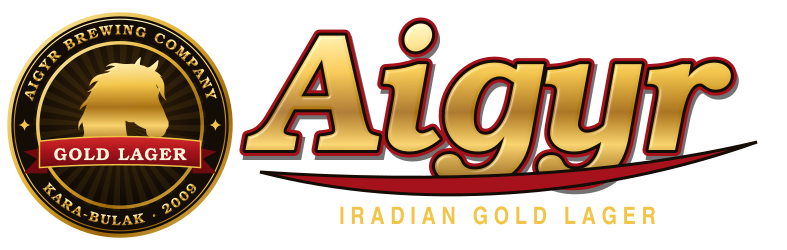
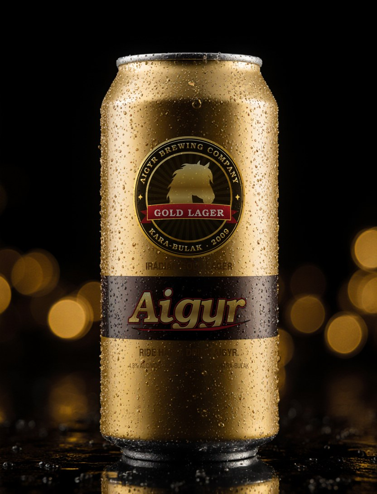
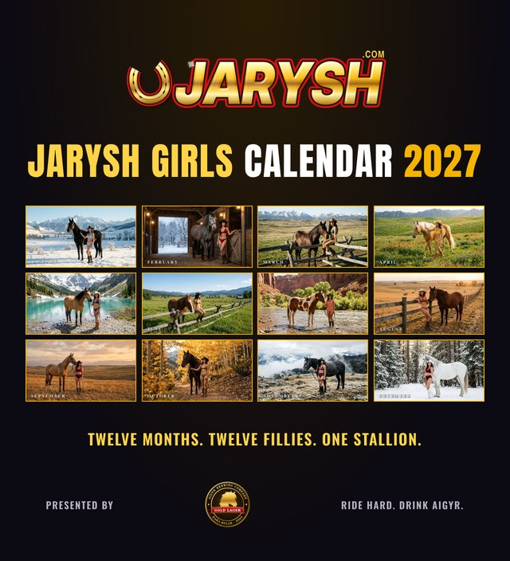

RIDE HARD. DRINK AIGYR.

Brewed in Kara-Bulak in the Talas valley since 2009 on a Czech brewhouse, with Talas Alatau spring water and Chu valley barley. Aigyr means stallion. You know what that means.
| BEER | ABV | FOR |
|---|---|---|
| Aigyr Gold | 4.8% | The deck, the stands, the afterparty |
| Aigyr Chongtor Strong | 8.5% | Real men. Small glasses. |
| Aigyr Light | 3.5% | Your girlfriend's cousin |
THE AIGYR GIRLS


Find them on the Aigyr Deck every Ulak Night and at the President's Cup in March.
JARYSH GIRLS CALENDAR 2027, PRESENTED BY AIGYR

Twelve months. Twelve fillies. One stallion. Shot on location in the Chatkal valley (permits arranged, mostly). Miss December is Zhibek, 24, from Nurzhan, who says she "grew up around horses, unlike the Boss".
On sale now at all good kiosks and every Aigyr bar. Click the calendar to flip through it. 450 som, or free with a 24-can Aigyr Gold box.
Models are professionals aged 21 and over. Horse is a professional aged 9.